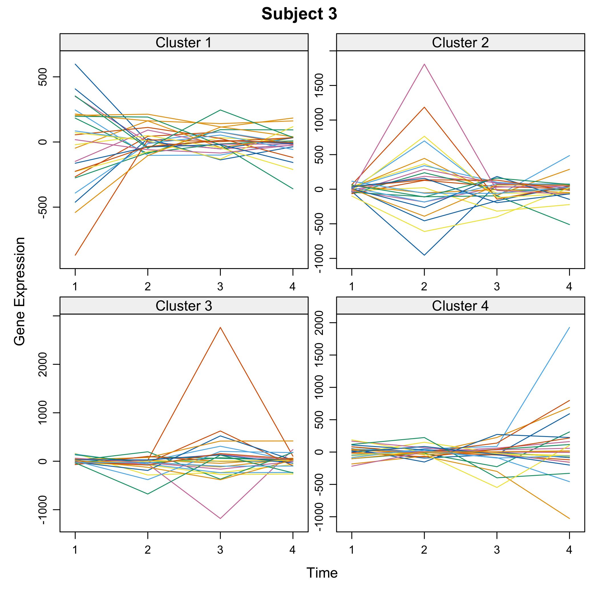
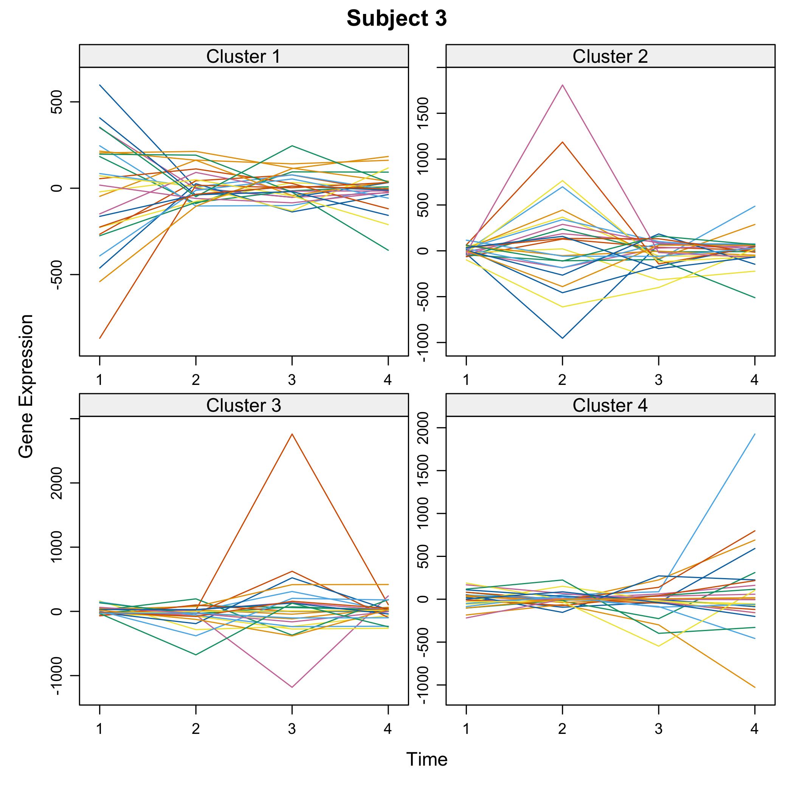

Cascade is a modeling tool allowing gene selection, reverse engineering, and prediction in cascade networks. Jung, N., Bertrand, F., Bahram, S., Vallat, L., and Maumy-Bertrand, M. (2014) https://doi.org/10.1093/bioinformatics/btt705.
The package was presented at the User2014! conference. Jung, N., Bertrand, F., Bahram, S., Vallat, L., and Maumy-Bertrand, M. (2014). “Cascade: a R-package to study, predict and simulate the diffusion of a signal through a temporal genenetwork”, book of abstracts, User2014!, Los Angeles, page 153, http://user2014.r-project.org/abstracts/posters/181_Jung.pdf.

Reverse-engineered network.

Simulation of an intervention on a gene of the network.
This website and these examples were created by F. Bertrand and M. Maumy-Bertrand.
Installation
You can install the released version of Cascade from CRAN with:
You can install the development version of Cascade from github with:
Examples
Data management
Import Cascade Data (repeated measurements on several subjects) from the CascadeData package and turn them into a micro array object. The second line makes sure the CascadeData package is installed.
library(Cascade)
if(!require(CascadeData)){install.packages("CascadeData")}
#> Le chargement a nécessité le package : CascadeData
data(micro_US)
micro_US<-as.micro_array(micro_US,time=c(60,90,210,390),subject=6)Get a summay and plots of the data:
summary(micro_US)
#> Le chargement a nécessité le package : cluster
#> N1_US_T60 N1_US_T90 N1_US_T210 N1_US_T390
#> Min. : 1.0 Min. : 1.0 Min. : 1.0 Min. : 1.0
#> 1st Qu.: 19.7 1st Qu.: 18.8 1st Qu.: 15.2 1st Qu.: 20.9
#> Median : 38.0 Median : 37.2 Median : 34.9 Median : 40.2
#> Mean : 107.5 Mean : 106.9 Mean : 109.6 Mean : 105.7
#> 3rd Qu.: 80.6 3rd Qu.: 82.1 3rd Qu.: 82.8 3rd Qu.: 84.8
#> Max. :8587.9 Max. :8311.7 Max. :7930.3 Max. :7841.8
#> N2_US_T60 N2_US_T90 N2_US_T210 N2_US_T390
#> Min. : 1.0 Min. : 1.0 Min. : 1.0 Min. : 1.0
#> 1st Qu.: 18.5 1st Qu.: 17.1 1st Qu.: 15.8 1st Qu.: 17.7
#> Median : 36.9 Median : 36.7 Median : 36.0 Median : 37.4
#> Mean : 110.6 Mean : 102.1 Mean : 106.8 Mean : 111.3
#> 3rd Qu.: 85.3 3rd Qu.: 78.2 3rd Qu.: 83.5 3rd Qu.: 86.4
#> Max. :7750.3 Max. :8014.3 Max. :8028.6 Max. :7498.4
#> N3_US_T60 N3_US_T90 N3_US_T210 N3_US_T390
#> Min. : 1.0 Min. : 1.0 Min. : 1.0 Min. : 1.0
#> 1st Qu.: 17.3 1st Qu.: 19.5 1st Qu.: 16.4 1st Qu.: 20.9
#> Median : 34.4 Median : 38.2 Median : 34.7 Median : 41.0
#> Mean : 101.6 Mean : 107.1 Mean : 100.3 Mean : 113.9
#> 3rd Qu.: 75.4 3rd Qu.: 82.3 3rd Qu.: 76.3 3rd Qu.: 89.2
#> Max. :8072.2 Max. :7889.2 Max. :8278.2 Max. :6856.2
#> N4_US_T60 N4_US_T90 N4_US_T210 N4_US_T390
#> Min. : 1.0 Min. : 1.0 Min. : 1.0 Min. : 1.0
#> 1st Qu.: 20.4 1st Qu.: 19.5 1st Qu.: 20.5 1st Qu.: 19.9
#> Median : 38.9 Median : 38.5 Median : 39.9 Median : 38.8
#> Mean : 113.6 Mean : 114.8 Mean : 110.1 Mean : 111.7
#> 3rd Qu.: 84.6 3rd Qu.: 86.1 3rd Qu.: 86.8 3rd Qu.: 85.4
#> Max. :9502.3 Max. :9193.4 Max. :9436.0 Max. :8771.0
#> N5_US_T60 N5_US_T90 N5_US_T210 N5_US_T390
#> Min. : 1.0 Min. : 1.0 Min. : 1.0 Min. : 1.0
#> 1st Qu.: 16.8 1st Qu.: 18.8 1st Qu.: 19.5 1st Qu.: 19.9
#> Median : 34.5 Median : 36.9 Median : 38.2 Median : 39.0
#> Mean : 111.3 Mean : 108.0 Mean : 107.4 Mean : 109.8
#> 3rd Qu.: 82.0 3rd Qu.: 81.4 3rd Qu.: 82.4 3rd Qu.: 84.9
#> Max. :8569.3 Max. :7970.1 Max. :8371.0 Max. :7686.5
#> N6_US_T60 N6_US_T90 N6_US_T210 N6_US_T390
#> Min. : 1.0 Min. : 1.0 Min. : 1.0 Min. : 1.0
#> 1st Qu.: 21.1 1st Qu.: 21.5 1st Qu.: 19.9 1st Qu.: 20.2
#> Median : 40.9 Median : 40.8 Median : 39.1 Median : 39.4
#> Mean : 110.1 Mean : 108.5 Mean : 112.0 Mean : 109.5
#> 3rd Qu.: 86.3 3rd Qu.: 85.6 3rd Qu.: 86.3 3rd Qu.: 86.6
#> Max. :8241.0 Max. :8355.0 Max. :8207.1 Max. :9520.0

Gene selection
There are several functions to carry out gene selection before the inference. They are detailed in the two vignettes of the package.
Data simulation
Let’s simulate some cascade data and then do some reverse engineering.
We first design the F matrix
T<-4
F<-array(0,c(T-1,T-1,T*(T-1)/2))
for(i in 1:(T*(T-1)/2)){diag(F[,,i])<-1}
F[,,2]<-F[,,2]*0.2
F[2,1,2]<-1
F[3,2,2]<-1
F[,,4]<-F[,,2]*0.3
F[3,1,4]<-1
F[,,5]<-F[,,2]We set the seed to make the results reproducible and draw a scale free random network.
set.seed(1)
Net<-Cascade::network_random(
nb=100,
time_label=rep(1:4,each=25),
exp=1,
init=1,
regul=round(rexp(100,1))+1,
min_expr=0.1,
max_expr=2,
casc.level=0.4
)
Net@F<-FWe simulate gene expression according to the network that was previously drawn
M <- Cascade::gene_expr_simulation(
network=Net,
time_label=rep(1:4,each=25),
subject=5,
level_peak=200)
#> Le chargement a nécessité le package : VGAM
#> Le chargement a nécessité le package : stats4
#> Le chargement a nécessité le package : splines
#> Le chargement a nécessité le package : magic
#> Le chargement a nécessité le package : abindGet a summay and plots of the simulated data:
summary(M)
#> log(S/US) : P1T1 log(S/US) : P1T2 log(S/US) : P1T3
#> Min. :-759.882 Min. :-2024.5979 Min. :-1007.748
#> 1st Qu.: -36.758 1st Qu.: -22.5653 1st Qu.: -68.054
#> Median : 6.265 Median : 0.5759 Median : -4.192
#> Mean : 10.613 Mean : -6.6230 Mean : 3.085
#> 3rd Qu.: 74.682 3rd Qu.: 78.2516 3rd Qu.: 74.866
#> Max. : 647.643 Max. : 870.7513 Max. : 1155.413
#> log(S/US) : P1T4 log(S/US) : P2T1 log(S/US) : P2T2
#> Min. :-1075.637 Min. :-790.431 Min. :-1505.543
#> 1st Qu.: -31.538 1st Qu.: -65.394 1st Qu.: -59.833
#> Median : -2.293 Median : 2.087 Median : -1.262
#> Mean : 9.055 Mean : 7.791 Mean : -18.568
#> 3rd Qu.: 75.316 3rd Qu.: 70.108 3rd Qu.: 76.908
#> Max. : 556.449 Max. : 669.203 Max. : 1058.385
#> log(S/US) : P2T3 log(S/US) : P2T4 log(S/US) : P3T1
#> Min. :-980.965 Min. :-547.117 Min. :-1278.6158
#> 1st Qu.: -55.077 1st Qu.: -58.721 1st Qu.: -42.1909
#> Median : -7.144 Median : -3.519 Median : 0.4064
#> Mean : -35.647 Mean : -24.277 Mean : -3.8860
#> 3rd Qu.: 41.364 3rd Qu.: 37.621 3rd Qu.: 48.4275
#> Max. :1114.897 Max. : 270.423 Max. : 527.3972
#> log(S/US) : P3T2 log(S/US) : P3T3 log(S/US) : P3T4
#> Min. :-624.834 Min. :-1018.897 Min. :-2403.703
#> 1st Qu.: -48.460 1st Qu.: -52.456 1st Qu.: -57.493
#> Median : -2.505 Median : -2.026 Median : -4.529
#> Mean : -11.950 Mean : 5.893 Mean : -33.088
#> 3rd Qu.: 33.781 3rd Qu.: 43.214 3rd Qu.: 51.808
#> Max. : 576.141 Max. : 1159.517 Max. : 495.014
#> log(S/US) : P4T1 log(S/US) : P4T2 log(S/US) : P4T3
#> Min. :-683.000 Min. :-1957.3692 Min. :-591.460
#> 1st Qu.: -81.510 1st Qu.: -39.3372 1st Qu.: -39.499
#> Median : 5.102 Median : -0.0215 Median : 2.251
#> Mean : -2.034 Mean : 2.9550 Mean : 27.377
#> 3rd Qu.: 74.738 3rd Qu.: 77.1869 3rd Qu.: 62.097
#> Max. : 454.955 Max. : 955.0680 Max. :1341.859
#> log(S/US) : P4T4 log(S/US) : P5T1 log(S/US) : P5T2
#> Min. :-577.069 Min. :-436.986 Min. :-647.1962
#> 1st Qu.: -31.924 1st Qu.: -69.809 1st Qu.: -48.5156
#> Median : 2.456 Median : 2.156 Median : -0.2949
#> Mean : 29.675 Mean : -2.929 Mean : 6.2300
#> 3rd Qu.: 35.322 3rd Qu.: 47.462 3rd Qu.: 47.9558
#> Max. :1577.042 Max. : 651.596 Max. :1359.9584
#> log(S/US) : P5T3 log(S/US) : P5T4
#> Min. :-409.347 Min. :-188.652
#> 1st Qu.: -44.205 1st Qu.: -33.097
#> Median : -1.056 Median : 1.873
#> Mean : 6.190 Mean : 26.740
#> 3rd Qu.: 47.694 3rd Qu.: 67.879
#> Max. : 434.178 Max. : 743.820


 


Network inference
We infer the new network using subjectwise leave one out cross-validation (all measurement from the same subject are removed from the dataset)
Net_inf_C <- Cascade::inference(M, cv.subjects=TRUE)
#> Le chargement a nécessité le package : nnls
#> We are at step : 1
#> The convergence of the network is (L1 norm) : 0.0068
#> We are at step : 2
#> The convergence of the network is (L1 norm) : 0.00121
#> We are at step : 3
#> The convergence of the network is (L1 norm) : 0.00096

Heatmap of the coefficients of the Omega matrix of the network

###Post inferrence network analysis We switch to data that were derived from the inferrence of a real biological network and try to detect the optimal cutoff value: the best cutoff value for a network to fit a scale free network.
data("network")
set.seed(1)
cutoff(network)
#> [1] "This calculation may be long"
#> [1] "1/10"
#> [1] "2/10"
#> [1] "3/10"
#> [1] "4/10"
#> [1] "5/10"
#> [1] "6/10"
#> [1] "7/10"
#> [1] "8/10"
#> [1] "9/10"
#> [1] "10/10"
#> [1] 0.000 0.000 0.569 0.295 0.242 0.147 0.012 0.387 0.351 0.096#> $p.value
#> [1] 0.000 0.000 0.569 0.295 0.242 0.147 0.012 0.387 0.351 0.096
#>
#> $p.value.inter
#> [1] -0.0655747 0.2027477 0.3488525 0.3976355 0.2215038 0.1046155
#> [7] 0.1257731 0.2560059 0.2561465 0.1560364
#>
#> $sequence
#> [1] 0.00000000 0.04444444 0.08888889 0.13333333 0.17777778 0.22222222
#> [7] 0.26666667 0.31111111 0.35555556 0.40000000Analyze the network with a cutoff set to the previouly found 0.14 optimal value.
analyze_network(network,nv=0.14)
#> Le chargement a nécessité le package : tnet
#> Le chargement a nécessité le package : igraph
#>
#> Attachement du package : 'igraph'
#> The following object is masked from 'package:Cascade':
#>
#> compare
#> The following objects are masked from 'package:stats':
#>
#> decompose, spectrum
#> The following object is masked from 'package:base':
#>
#> union
#> Le chargement a nécessité le package : survival
#> tnet: Analysis of Weighted, Two-mode, and Longitudinal networks.
#> Type ?tnet for help.
#> node betweenness degree output closeness
#> 1 1 0 2 0.8926116 3.4568936
#> 2 2 8 4 1.9743442 7.6462127
#> 3 3 0 7 1.8553824 7.9432707
#> 4 4 0 8 1.7486586 19.3833453
#> 5 5 0 2 0.6506125 2.5196830
#> 6 6 0 1 0.2574582 3.5710079
#> 7 7 0 0 0.0000000 0.0000000
#> 8 8 0 1 0.1473340 9.6745021
#> 9 9 4 3 0.6096656 3.1298983
#> 10 10 13 5 0.9515114 4.1040201
#> 11 11 0 3 0.6334876 14.4151521
#> 12 12 0 8 1.9464590 8.2961649
#> 13 13 0 0 0.0000000 0.0000000
#> 14 14 0 1 0.1887766 2.8205567
#> 15 15 0 6 1.8989053 14.1284848
#> 16 16 80 21 5.9550024 25.8561407
#> 17 17 0 9 1.8968626 10.3999011
#> 18 18 0 7 1.2824028 5.6754961
#> 19 19 0 0 0.0000000 0.0000000
#> 20 20 0 0 0.0000000 0.0000000
#> 21 21 0 0 0.0000000 0.0000000
#> 22 22 0 0 0.0000000 0.0000000
#> 23 23 0 0 0.0000000 0.0000000
#> 24 24 0 0 0.0000000 0.0000000
#> 25 25 0 0 0.0000000 0.0000000
#> 26 26 0 0 0.0000000 0.0000000
#> 27 27 0 6 2.1415518 8.7562239
#> 28 28 0 1 0.1541501 0.5969904
#> 29 29 0 0 0.0000000 0.0000000
#> 30 30 0 0 0.0000000 0.0000000
#> 31 31 0 0 0.0000000 0.0000000
#> 32 32 0 0 0.0000000 0.0000000
#> 33 33 0 0 0.0000000 0.0000000
#> 34 34 0 1 0.2454127 0.9504308
#> 35 35 0 5 1.1015903 4.6510336
#> 36 36 0 0 0.0000000 0.0000000
#> 37 37 0 0 0.0000000 0.0000000
#> 38 38 0 0 0.0000000 0.0000000
#> 39 39 0 0 0.0000000 0.0000000
#> 40 40 0 0 0.0000000 0.0000000
#> 41 41 0 0 0.0000000 0.0000000
#> 42 42 0 0 0.0000000 0.0000000
#> 43 43 0 0 0.0000000 0.0000000
#> 44 44 0 0 0.0000000 0.0000000
#> 45 45 0 0 0.0000000 0.0000000
#> 46 46 0 0 0.0000000 0.0000000
#> 47 47 0 0 0.0000000 0.0000000
#> 48 48 1 1 0.2637553 1.0214678
#> 49 49 0 1 0.1802868 0.6982120
#> 50 50 0 0 0.0000000 0.0000000
#> 51 51 0 0 0.0000000 0.0000000
#> 52 52 0 0 0.0000000 0.0000000
#> 53 53 0 0 0.0000000 0.0000000
#> 54 54 0 0 0.0000000 0.0000000
#> 55 55 0 0 0.0000000 0.0000000
#> 56 56 0 0 0.0000000 0.0000000
#> 57 57 5 1 0.4122623 1.5966037
#> 58 58 0 0 0.0000000 0.0000000
#> 59 59 0 0 0.0000000 0.0000000
#> 60 60 0 0 0.0000000 0.0000000
#> 61 61 0 0 0.0000000 0.0000000
#> 62 62 0 0 0.0000000 0.0000000
#> 63 63 4 1 0.1408429 0.5454544
#> 64 64 0 0 0.0000000 0.0000000
#> 65 65 0 0 0.0000000 0.0000000
#> 66 66 0 0 0.0000000 0.0000000
#> 67 67 0 0 0.0000000 0.0000000
#> 68 68 0 0 0.0000000 0.0000000
#> 69 69 0 0 0.0000000 0.0000000
#> 70 70 0 0 0.0000000 0.0000000
#> 71 71 0 0 0.0000000 0.0000000
#> 72 72 4 1 0.2259305 0.8749804
#> 73 73 0 0 0.0000000 0.0000000
#> 74 74 0 0 0.0000000 0.0000000
#> 75 75 3 1 0.2113341 0.8184518
#> 76 76 0 0 0.0000000 0.0000000
#> 77 77 0 0 0.0000000 0.0000000
#> 78 78 0 0 0.0000000 0.0000000
#> 79 79 2 1 0.1566707 0.6067519
#> 80 80 0 0 0.0000000 0.0000000
#> 81 81 0 0 0.0000000 0.0000000
#> 82 82 4 2 0.6126892 2.3728140
#> 83 83 7 1 0.2063532 0.7991616
#> 84 84 5 1 0.2370599 0.9180821
#> 85 85 4 1 0.1582045 0.6126923
#> 86 86 0 0 0.0000000 0.0000000
#> 87 87 0 0 0.0000000 0.0000000
#> 88 88 0 0 0.0000000 0.0000000
#> 89 89 0 0 0.0000000 0.0000000
#> 90 90 5 1 0.2023903 0.7838142
#> 91 91 0 0 0.0000000 0.0000000
#> 92 92 0 0 0.0000000 0.0000000
#> 93 93 0 1 0.1544264 0.5980606
#> 94 94 0 0 0.0000000 0.0000000
#> 95 95 0 0 0.0000000 0.0000000
#> 96 96 0 0 0.0000000 0.0000000
#> 97 97 0 0 0.0000000 0.0000000
#> 98 98 0 0 0.0000000 0.0000000
#> 99 99 0 0 0.0000000 0.0000000
#> 100 100 0 0 0.0000000 0.0000000
#> 101 101 0 0 0.0000000 0.0000000
#> 102 102 0 0 0.0000000 0.0000000